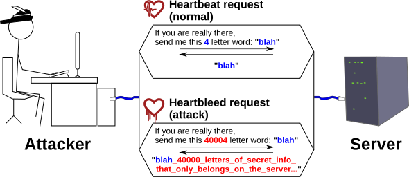

Executive Summary
In 2026, an old flaw surfaced in Squid Proxy, a piece of software that quietly sits at the edge of countless corporate networks. Its name is Squidbleed (CVE-2026-47729), and it had been in the code since January 1997. What makes the story unusual is who found it. The first party to call this an actual bug was not a person but an AI agent, and it grounded that judgment by citing a clause of the C language standard. This article reads the event not as a security bulletin but as a question about data quality.
No one caught it for 29 years because the bug lived in an edge case, off to the side of the ordinary execution path. The AI found that corner by checking the code against the specification, the way a code review or a test suite rarely does. There is a twist, though. Even after the AI flagged the bug, backporting the patch to each version, crediting the discoverer correctly, and notifying users still had to be done by hand.
The belief that "code in long use is code that has been vetted" wobbles here. Code is not so different from data, which loses quality when it is created once and then left untouched for years. AI can be a tool that audits that neglected data. This article looks at both that possibility and the part that still falls to people after the discovery is made.
The mark this event left behind compresses into four numbers: how long the flaw stayed hidden, how many teams independently reached it in the same window, and how far the patch and the public advisory drifted apart afterward.
29 years
Time the bug lay hidden
In the code since January 1997
3 teams
Independent discoveries
Same bug reached separately within two months
One month
v8→v7 patch gap
v7 users stayed exposed in between
Two weeks
Release→advisory
A window where users couldn't confirm the fix
The Flaw That Slept Since 1997
Squid is proxy software that brokers web traffic at the network boundary of companies and institutions. Many organizations place it inside the firewall and route outbound requests through it. That is exactly why it was seen as old, and therefore vetted. The flaw that surfaced this time, Squidbleed, was in the parser Squid uses to read FTP directory listings.
The cause is one small trap in the C language. The strchr() function, which searches a string for a given character, behaves as a special case when the character being searched for is the null character ('\0') that marks the end of a string. You might expect it to come back empty-handed (NULL), but the C standard says it must return a pointer to the null terminator at the end of the string. Squid's FTP parser did not read this pointer as a "not found" signal; it fed the pointer straight into further arithmetic, and as a result read past the boundary of the buffer into adjacent memory.
That adjacent memory can hold request data from another user passing through the same proxy. It is an information-disclosure flaw, one that can leak sensitive material such as credentials or API keys to an attacker. The conditions are not demanding either: the attacker only needs to get the proxy to reach an FTP server they control.
What makes it worse is the default configuration. Unless it is explicitly turned off, Squid ships with FTP support enabled, and port 21, the channel it travels through, sits in the default allow-list (the Safe_ports ACL). In other words, a great many ordinary installations that an administrator never touched were left exposed on this vulnerable path.
The reason this flaw survived for 29 years is paradoxical. In an ordinary FTP listing, this code path almost never runs. The correct, spec-conformant behavior of a function met code that misread it, and the two only caused trouble under a very rare condition. So even through long, heavy use, it remained a mine no one happened to step on.
How an AI Reads a State Machine
The way it was found mirrors how AI is used today. A researcher at Calif.io told an AI agent to investigate Squid's entire FTP state machine, with instructions to spin up additional agents as needed and dig into each path one by one. Somewhere in that sweep, the AI pointed at the trouble spot and judged: "strchr(w_space, '\0') returns a non-null value per C11 §7.24.5.2. The terminating null is part of the string. This is a real bug."
The part worth noting is how it reasoned. The AI did not stop at "this looks off"; it cited a specific clause of the C standard to argue why it was a bug. That is precisely the contrast with why people missed it for 29 years. When a person reads code, they scan the common paths first, and rare edge cases slip into the blind spot of tests and reviews. In this investigation, by contrast, the AI checked every branch of the state machine against the specification, one at a time. The spot where a person would think "surely nothing goes wrong here" is the spot the machine did not skip.
An even more telling signal is that there was not just one discoverer. In early March a researcher at Aisle Research first reported the flaw, and over April and May two other teams who did not know one another independently arrived at the same bug. Three independent discoveries within two months are hard to write off as coincidence. It reads instead as a sign that, as AI-driven code-audit tools spread, long-dormant flaws are waking up around the same time.
The point is not to boast about a tool's performance. It is the fact that AI is used not only to generate code but also to audit code that already exists, by checking it against the specification. On the other side of the "AI ruins code" story, AI is becoming a lens for reading code that people have long looked away from.
The Myth of "Battle-Tested Legacy"
Many organizations use old code with a clear conscience, on the intuition that anything running for decades must have been vetted enough by now. Squidbleed touches exactly the weak link in that intuition. "In long use" only means "the frequently executed paths are stable"; it is no guarantee that a rarely executed edge case is safe. Verification only ever reaches as far as the paths actually walked.

A principle Pebblous has worked with for a long time in data quality applies directly here. Data that was collected and processed once still drifts out of step with reality and degrades in quality when it is left alone for years. Code is the same. Left untouched, frozen on top of the assumptions and conventions of the moment it was written, it becomes old data in need of an audit. Code, after all, is text meant to be read and written by people, and neglected text carries the same risk as neglected data.
If that is so, the place where an AI audit yields the most value is not the newest code. It is the old code that everyone believes is "already vetted" and therefore no one looks at again. The further it has drifted from human attention, the wider its blind spot, and the machine's method of checking against the whole specification has a particular edge across that wide blind spot.
"Battle-tested legacy" is not a state but an assumption. Fail to re-test that assumption periodically, and only the belief that it is safe accumulates alongside the 29 years. It is when you start treating code as data to be audited that legacy finally becomes a managed asset.
After the Find, It's on People
An AI flagging the bug did not mean the problem was over. The timeline that followed shows the distance between automatic discovery and automatic resolution. The fix landed first, in mid-April, on the latest development branch (v8), but reaching the still widely used v7 branch took another month. For that month, organizations running v7 stayed vulnerable even though a patch existed.
The timing of the disclosure drifted too. Version 7.6, which carried the fix, shipped in early June, but the official advisory explaining what it fixed did not appear until two weeks later. For that stretch, users could not be sure the new version had actually covered the flaw. On top of that, the original reporter was left out of the official advisory and only added to the contributor list after raising the issue.
The lesson here is clear. Even when an AI finds a flaw, backporting the patch to each version, attributing the discovery correctly, and notifying users in time are still designed and carried out by people. Automatic discovery is the start of the workflow, not the end. What an organization needs to prepare is the procedure for "after the AI finds something": how far back to fix across branches, who to notify and when, and how to record the credit for the discovery, all decided in advance.
The real benefit an AI code audit gives an organization is not the bug list itself. That benefit is only realized when a human workflow sits alongside it, one that takes the list and verifies, tracks, and responsibly discloses each item. Discovery has sped up, but what comes after discovery is still time that people design.
Editor's note. Pebblous has long worked on the process of getting data ready to be used by AI (AI-Ready Data). Squidbleed shows that the same lens reaches code. Treat code as data to be audited, and the AI reads out the flaws people missed while people take on verifying and tracking that discovery. This division between discovery and verification is the starting point for turning legacy into a managed asset.
References
- 1.Lam, J. R. (2026, June 10). "Squidbleed (CVE-2026-47729)." Calif.io Blog. (Primary source)
- 2.The Hacker News. (2026, June). "29-Year-Old Squid Proxy Bug 'Squidbleed'." The Hacker News.
- 3.SquidBleed. (2026). "SquidBleed — CVE-2026-47729." squidbleed.xyz.